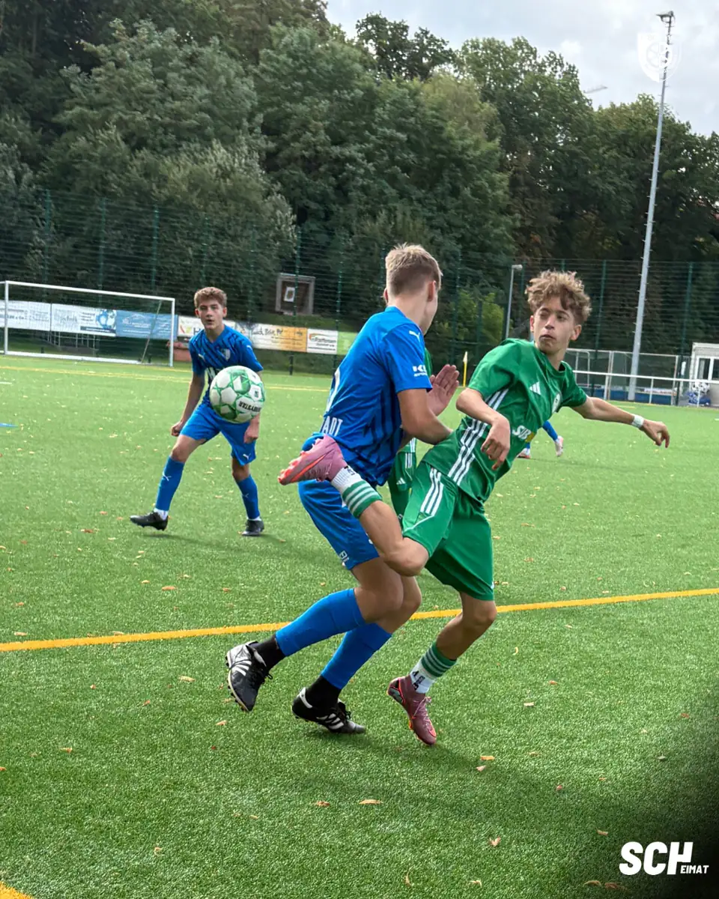
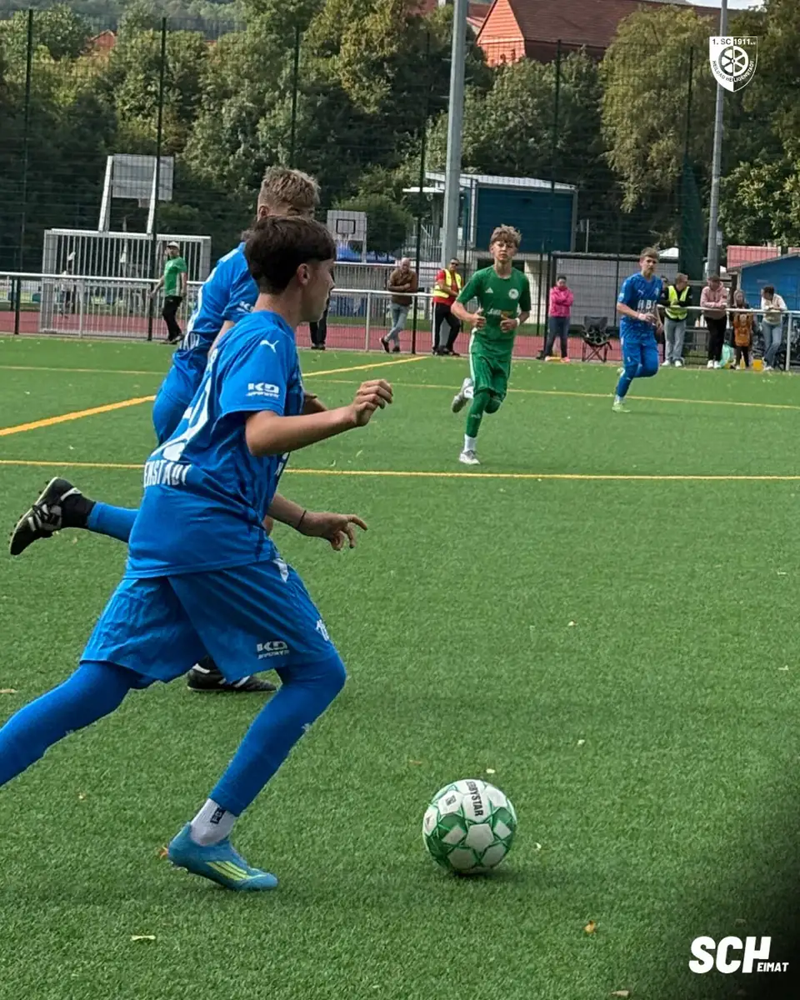
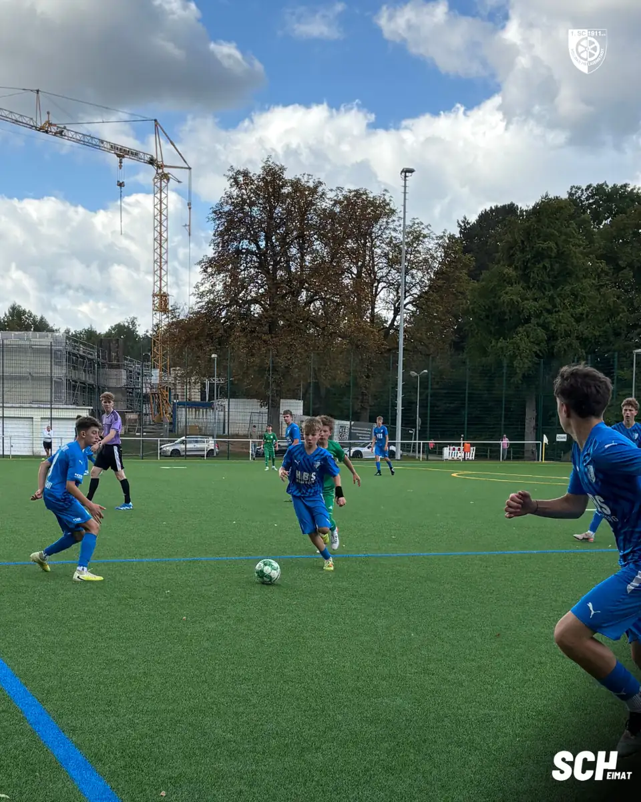
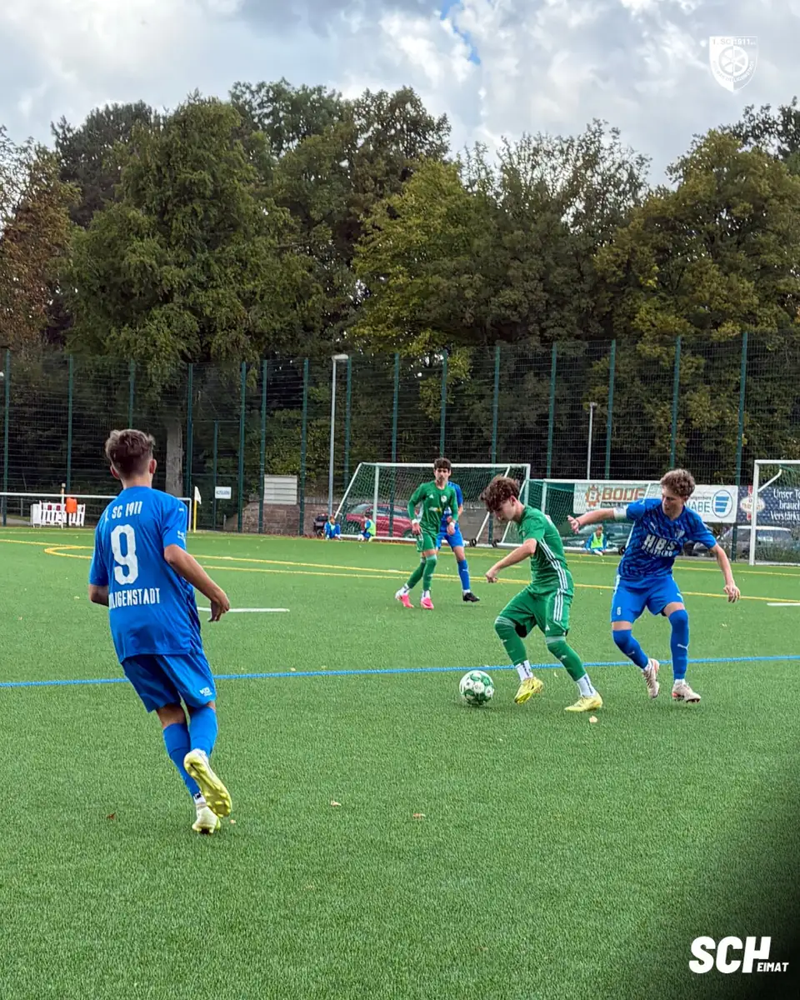

U15 mit Torfestival: Acht Treffer gegen Weimar
Unsere U15 hat ihren starken Saisonstart eindrucksvoll fortgesetzt. Die Mannschaft von Trainer Alexander Eschborn setzte sich am dritten Spieltag der C-Junioren-Verbandsliga mit 8:1 (3:0) gegen den SC 1903 Weimar durch. Drei Treffer in der ersten Hälfte, eine kurze Antwort der Gäste nach der Pause und anschließend fünf weitere Tore machten aus einem überzeugenden Auftritt einen deutlichen Heimsieg. Nach drei Spieltagen stehen damit drei Siege und neun Punkte auf dem Konto.
Frühe Tore geben die Richtung vor
Viel Anlaufzeit brauchten die Blau-Weißen am Samstagvormittag nicht. Die Mannschaft war präsent, spielte konzentriert und bestimmte über weite Strecken der ersten Hälfte das Geschehen. Schon nach zehn Minuten schlug sich das auch auf der Anzeigetafel nieder: Maximilian Ludemann erzielte das 1:0. Der SCH blieb dran. Nur fünf Minuten später folgte der nächste Treffer. Jonathan Strecker erhöhte in der 15. Minute auf 2:0 und sorgte damit früh für eine komfortable Ausgangslage. Weimar fand in dieser Phase kaum einen Weg, um den Spielfluss unserer U15 nachhaltig zu unterbrechen. Auch nach dem zweiten Tor ließ die Eschborn-Elf nicht nach. Statt das Ergebnis nur zu verwalten, blieb sie konsequent und belohnte sich erneut. In der 22. Minute war es wieder Maximilian Ludemann, der seinen zweiten Treffer des Vormittags erzielte und auf 3:0 stellte. Innerhalb von zwölf Minuten hatten die Blau-Weißen damit drei Tore erzielt.
Klarer Auftritt bis zur Pause
Das Ergebnis spiegelte auch den Verlauf der ersten 35 Minuten wider. Unsere U15 kontrollierte die Partie, blieb diszipliniert und gab den Gästen nur wenig Gelegenheit, selbst Einfluss auf das Spiel zu nehmen.
Entscheidend war dabei nicht allein die Zahl der Tore. Der SCH hielt nach der frühen Führung an seiner Linie fest und ließ sich auch vom deutlichen Zwischenstand nicht aus dem Rhythmus bringen. Mit dem 3:0 ging es schließlich in die Pause. Eine verdiente Führung nach einer ersten Hälfte, in der die Blau-Weißen das Spiel klar bestimmt hatten.
Weimar verkürzt – der SCH antwortet
Nach dem Seitenwechsel gab es dann den einzigen Abschnitt, in dem die Partie kurz eine andere Richtung zu nehmen schien. Oskar Geßner verkürzte in der 41. Minute auf 3:1. Für Weimar war es die Gelegenheit, noch einmal etwas Hoffnung zu schöpfen. Für unsere Mannschaft war es gleichzeitig der Moment, wieder einen Gang hochzuschalten. Und genau das gelang.
Der Gegentreffer brachte die Eschborn-Elf nicht aus dem Konzept. Statt nervös zu werden, übernahmen die Blau-Weißen wieder die Kontrolle und stellten den alten Abstand her. In der 53. Minute traf Diego Mariscal Cortina zum 4:1. Nur zwei Minuten später legte Konrad Meitzner nach. Das 5:1 in der 55. Minute war die endgültige Antwort auf Weimars Anschlusstreffer.
Vier Tore in einer starken Schlussphase
Damit war die Partie entschieden, doch der SCH blieb weiter konsequent. Gerade in der Schlussphase zeigte die Mannschaft, dass sie den Auftritt sauber zu Ende bringen wollte. In der 63. Minute erhöhte Leon-Joel Preiß auf 6:1. Wieder lagen anschließend nur zwei Minuten zwischen zwei Treffern: Maksymilian Kossakowski sorgte in der 65. Minute für das 7:1.
Den Schlusspunkt setzte schließlich der Spieler, der die Partie auch eröffnet hatte. Maximilian Ludemann traf in der 69. Minute zum 8:1 und schnürte damit seinen Dreierpack. Zwischen seinem Führungstreffer in der zehnten Minute und dem letzten Tor des Vormittags lagen fast 60 Minuten – dazwischen entwickelte sich ein Spiel, das unsere U15 über weite Strecken klar kontrollierte.
Drei Spiele, drei Siege
So deutlich das Ergebnis am Ende ausfiel, so wichtig war die Art und Weise, wie es zustande kam. Die Blau-Weißen spielten konzentriert, ließen sich vom Gegentreffer nach der Pause nicht verunsichern und fanden unmittelbar zurück in ihren Rhythmus. Aus einem 3:1 wurde innerhalb von 14 Minuten ein 7:1.
Der Lohn ist ein perfekter Saisonstart. Nach dem dritten Spieltag steht unsere U15 bei neun Punkten und einem Torverhältnis von 14:2. Damit belegt der SCH aktuell den dritten Platz in der Tabelle der C-Junioren-Verbandsliga. Weimar blieb dagegen auch im dritten Saisonspiel ohne Punkt. Für die Mannschaft von Alexander Eschborn ist das 8:1 deshalb mehr als nur ein hoher Sieg. Es war ein Auftritt, bei dem sie nach einer souveränen ersten Hälfte auch auf den einzigen Rückschlag des Spiels die passende Antwort fand. Viel mehr kann man aus den ersten Wochen einer neuen Saison kaum mitnehmen.
Saalfeld kommt in den Gesundbrunnen
Weiter geht es für unsere U15 am Sonntag, 13. September. Dann steht direkt das nächste Heimspiel auf dem Programm. Um 10:30 Uhr ist die SG FC Saalfeld auf dem Kunstrasenplatz im Gesundbrunnen zu Gast. Saalfeld steht aktuell bei sechs Punkten aus drei Partien. Für den SCH bietet sich damit die Gelegenheit, den gelungenen Saisonstart vor heimischer Kulisse weiter auszubauen.
Spieldaten
SC Heiligenstadt U15 – SC 1903 Weimar 8:1 (3:0)
SC Heiligenstadt:
Erbendruth – Bierwisch – Müller – Kossakowski – Nolte (55. Merker) – Ludemann – Preis – Watterott (58. Griethe) – Strecker (67. Klöppner) – Mariscal Cortina (60. Wagner) – Meitzner
SC 1903 Weimar
Schlegel – Wackwitz – Schmidt – Kohlmann (57. Seifert) – Lehr – Mattern (36. Geßner) – Brillinger – Skayni – Holtrup – Conrad (25. Jahn) – Menzel (41. Hörr)
Schiedsrichter
Kuhn
Tore:
1:0 Ludemann (10.), 2:0 Strecker (15.), 3:0 Ludemann (22.), 3:1 Geßner (41.), 4:1 Cortina (53.), 5:1 Meitzner (55.), 6:1 Preiß (63.), 7:1 Kossakowski (65.), 8:1 Ludemann (69.)



